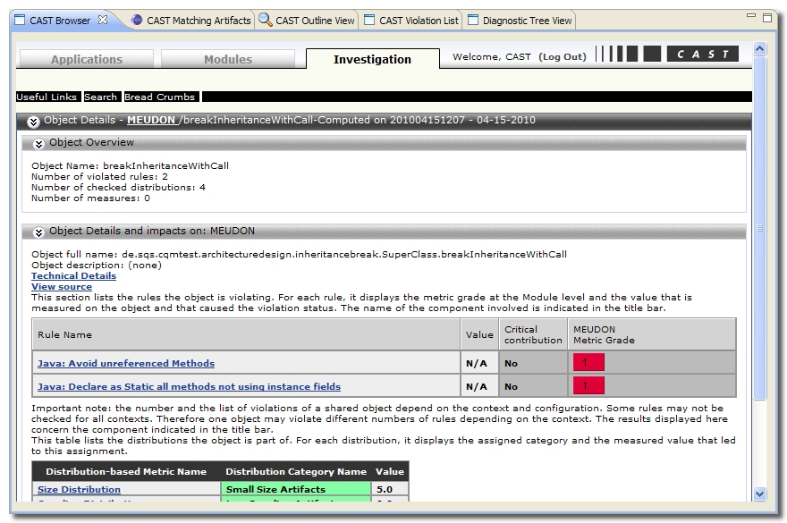

The CAST Browser displays information taken directly from the CAST Dashboard:

To display information in this tab, you need to click the button located in the CAST Outline View. You can display information about an object or a metric. You can also use the view to browse the CAST Dashboard by following the available hyperlinks.